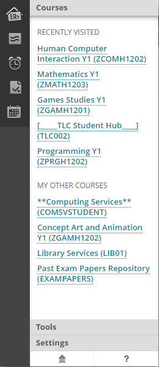
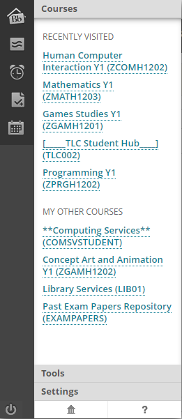
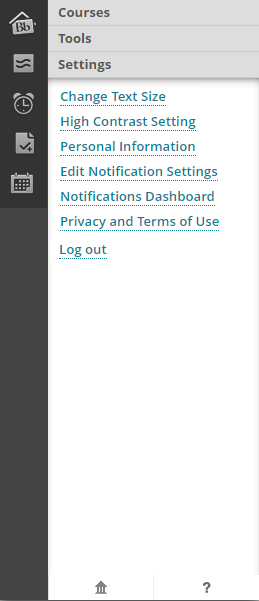
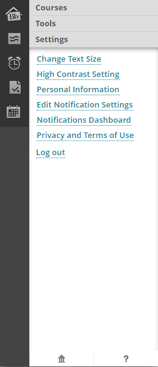

Prototypes
From the usability tests I noticed a big underuse of the profile dropdown menu.
From the tests conducted , it was almost as if the option for the dropdown did not exist at all. When the inexperienced users could not find the calender
from the course page, they gave up and went to the home page. This shows how camoflauged the drop down really is. Apart from that aspect of the test,
blackbaords simple, minimalistic design proved to be effective as even one of the more difficult tasks was easily completed from the home menu.
So i decided to make a small change to the drop down menu, making it much clearer to the user since before it was hard to see due to the small size and color
of it. I had increased the height, changed the color, increased the size of the drop down arrow, and increased the size of the profile avatar to match and
fit nice and snug to the profile bar. I also made the change to the text from stating the users name, to "My Profile". This change was perhaps not needed but
does allow for consistency in the design in the small case if a user had a lengthy title.


What also came to my attention was the possibility of an error prevention tweak/change. I had noticed that since the drop down as discussed, was barely visible,
I had only realised when paying attention to it that were was a log out button just as small and very close to the drop down menu. I had decided to put in
2 possible designs for preventing this error while also keeping the minimalistic and aesethic design blackboard has.


The picture on the left is the old drop down menu, and to the right is the new one with the log out button in the bottom left corner.
This a very small change however, it is comfortably distanced away
from the other options above. The options next to it also have wide boxes for interaction so i believe the possibility for error is
quite small compared to the preivious design and that now there is more prevention to the
error of logging out from blackboard.
As for the second other possible change, i had decided to convert the logout button into text format and place it in settings. This means more error
prevention as this newer logout button is now 3 clicks away, compared to the old 1 click and the the previous prototypes 2 clicks.
 

The difference between the two photos is quite hard to tell. This new logout text option fits in perfectly with the design, and the placement of it
in the settings tab under personal info, terms of use, etc, in my opinion, fits perfectly and makes perfect sense. Another very small tweak i made
entails removing the "Search the Web" option and the "My Announcements" Header to allow for efficient browsing and more space for the help tab.
I believe both the prototypes that I have presented here improve the UI in terms of design, aesthetic, and error prevention that much more compared
to the old UI while also keeping the same blacboard feeling present.
Final Design Look: